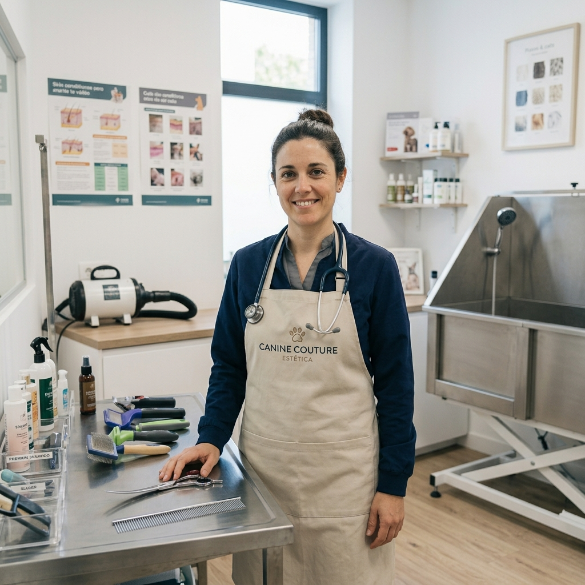

El mejor cuidado para tu mejor amigo
En Veterinaria Mary nos apasiona la salud y el bienestar de tus mascotas. Ofrecemos atención profesional con el cariño que ellos merecen.
Reserva una CitaNuestros Servicios

Consulta Médica
Revisiones generales, diagnósticos precisos y tratamientos personalizados.

Vacunación
Planes de vacunación completos para mantener protegidos a tus peludos.

Estética Canina
Baño, corte de pelo y cuidado de uñas para que luzcan espectaculares.
Nuestros Profesionales
Dr. Mateo Ruiz
Médico Veterinario / Cirujano
Especialista en medicina interna y cirugía de pequeños animales con más de 10 años de experiencia.
Dra. Elena García
Cardiología y Ecocardiografía
Enfocado en la prevención y tratamiento de enfermedades cardíacas en perros y gatos.
Dra. Laura Gómez
Especialista en Dermatología
cuidado de la piel y tratamiento de alergias en perros y gatos.

Dra. Sofía Martínez
Estética y Grooming
Experta en cuidado estético, trato amigable y bienestar para el manejo sin estrés.
Horarios de Atención
Lunes a Viernes: 9:00 AM - 7:00 PM
Sábados: 9:00 AM - 2:00 PM
Emergencias las 24 horas al número de contacto.